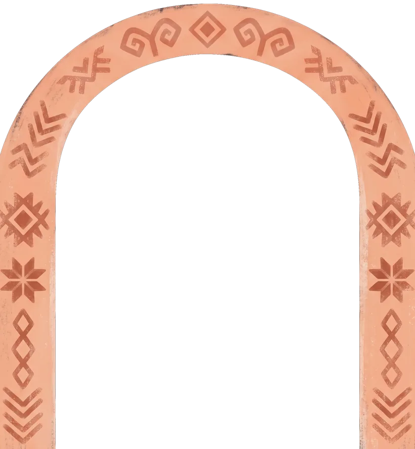
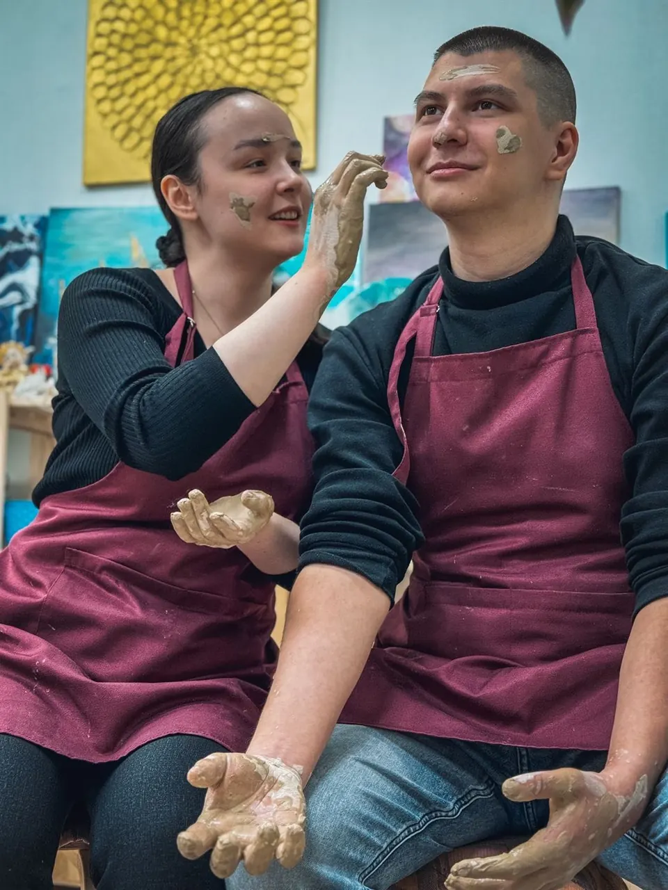
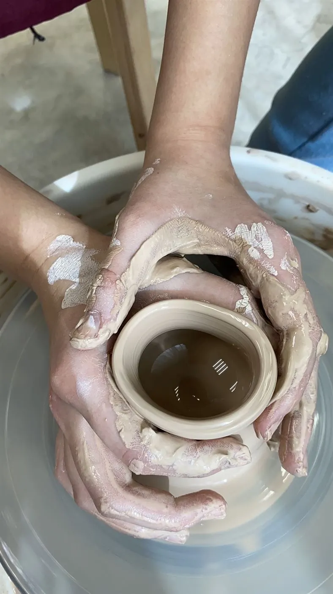
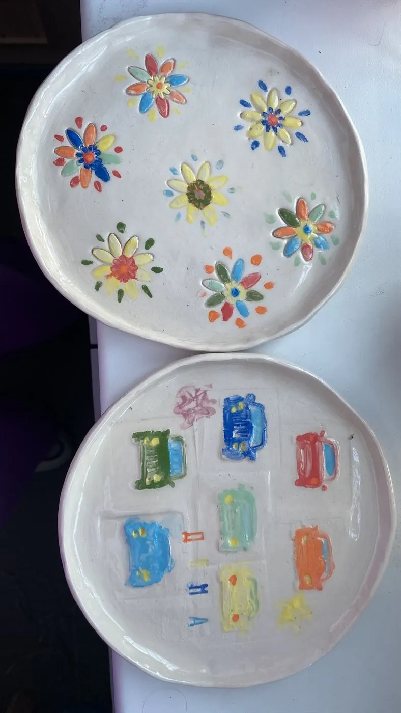
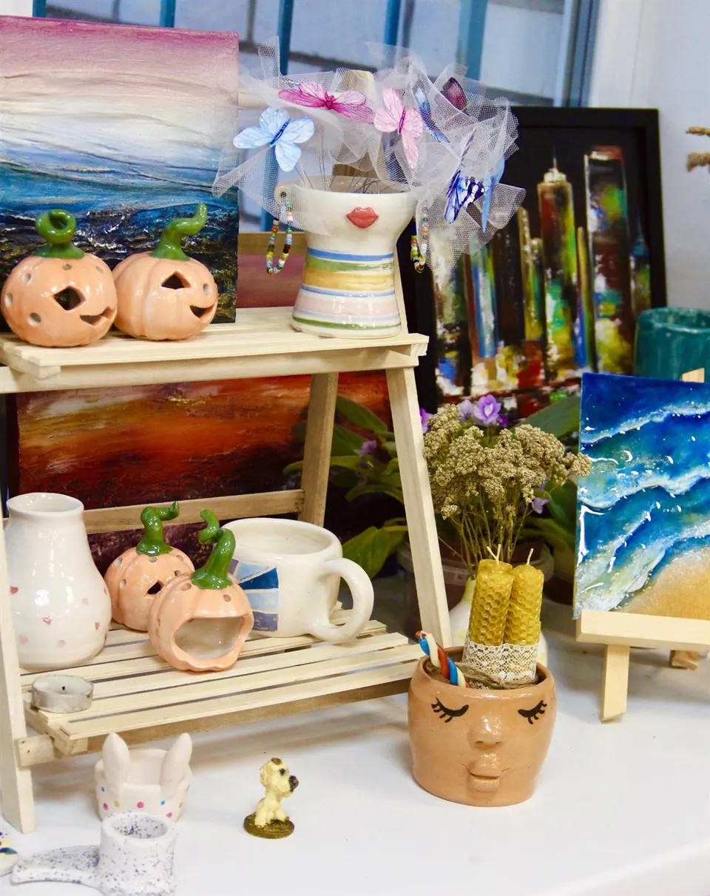
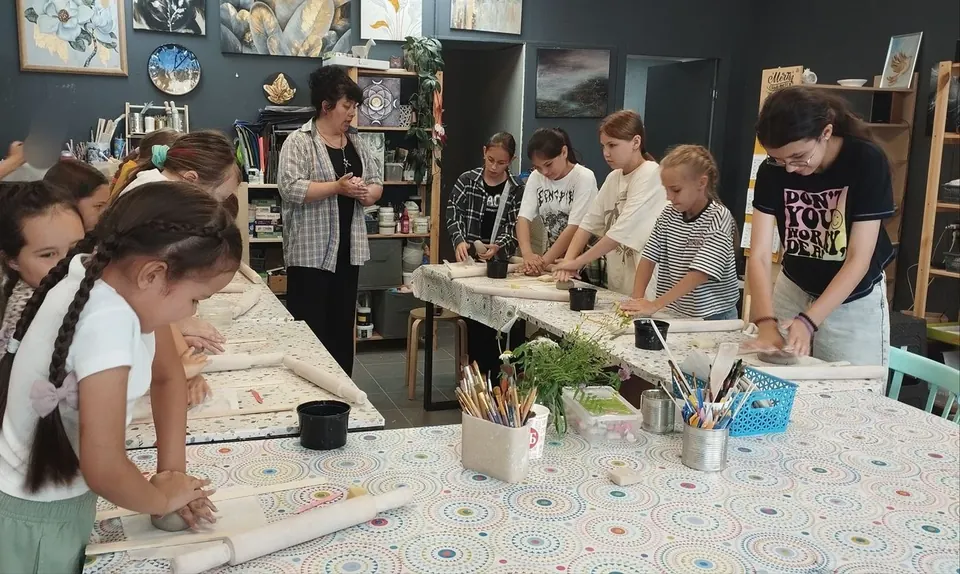
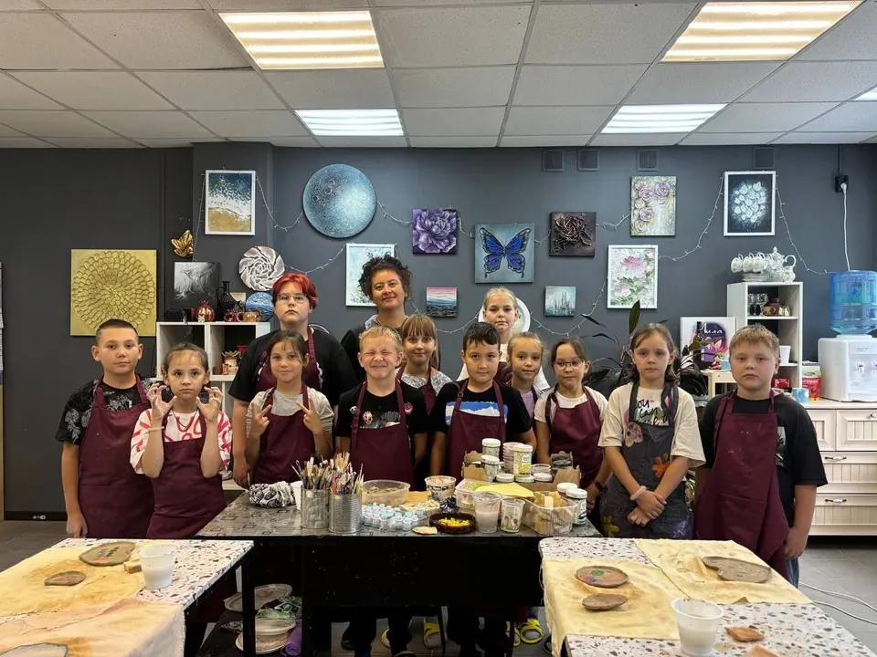
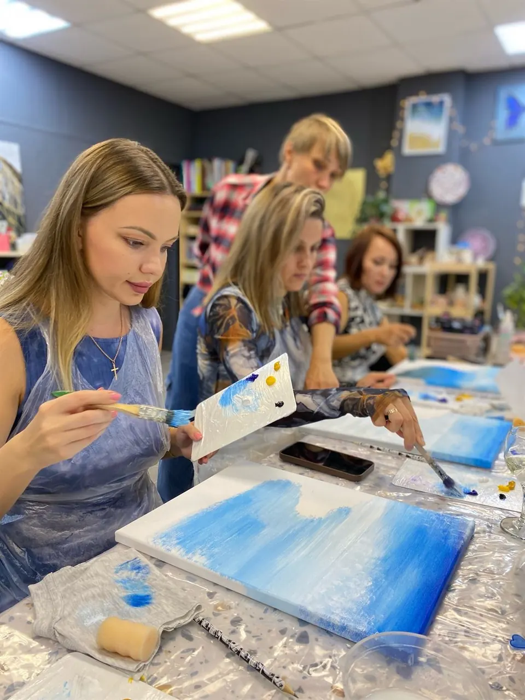
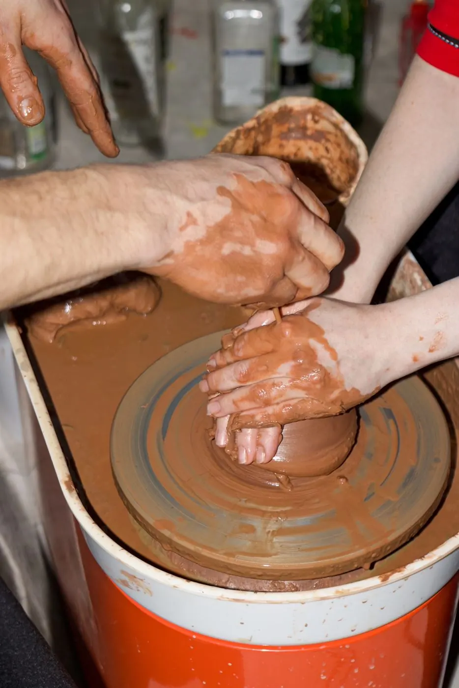

Слепите вазу прямо сейчас
А затем воплотите её в жизнь в нашей мастерской.
- Ком
- Круг
- Роспись
- Печь
- Готово
Ваш браузер не показывает 3D. Ничего страшного: настоящая глина всё равно лучше.

Этап 1 из 5
Ком глины
Глина легла на круг неровно, и её бьёт из стороны в сторону. Зажмите кнопку или саму глину, чтобы отцентровать ком.
Чем заняться в мастерской
выбирайте по настроению
А ещё в «Сенсорике» рисуют картины, расписывают футболки и шоперы и делают свечи. Полный каталог есть в услугах ВКонтакте.

Свидание за гончарным кругом
Лепим любовь своими руками
Один круг, четыре руки и тёплый вечер. Мастер покажет, как центровать глину и вытягивать стенки, а дальше всё зависит от вас двоих. Изделие останется на память о вечере.
- Стоимость
- Изделие готово
С фотосессией: . А ещё есть арт-свидание за холстами: .
Забронировать вечерПо-настоящему всё так же, только руками
Глина
Мастер даёт подготовленный ком и показывает, с чего начать.
Круг или стол
Формуете изделие на гончарном круге или лепите руками.
Сушка и обжиг
Изделие сохнет, потом его обжигают в печи. Это делает мастерская.
Роспись
Ангобы, глазури, краски: выбираете цвет и узор.
Готово
Забираете своё изделие. Срок:
Работы гостей мастерской
каждая — единственная







Цены
Свободное время и актуальные цены смотрите в онлайн-записи. Если сомневаетесь, что выбрать, напишите нам во ВКонтакте.
Онлайн-записьПодарите вечер с глиной
Сертификат на мастер-класс или свидание за гончарным кругом. Подарок, который потом можно поставить на полку.
Стоимость: на любую сумму
Заказать сертификатЧастые вопросы
Я никогда не лепил. Получится?
Да. Мастер показывает каждое движение и помогает, если глина капризничает. Первый раз на круге у всех немного кривой, и в этом его прелесть.
Что надеть?
Удобную одежду, которую не жалко. Глина отстирывается, но брызги на гончарном круге неизбежны. Фартуки выдаём в мастерской.
Когда можно забрать изделие?
Изделие должно высохнуть и пройти обжиг. Срок: .
С какого возраста можно детям?
Детские мастер-классы и праздники рассчитаны на школьный возраст. Ребятам доступны ручная лепка, рисование и роспись.
Как записаться?
Через онлайн-запись YClients или сообщением во ВКонтакте. Ответим и подберём время.